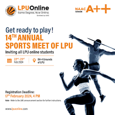
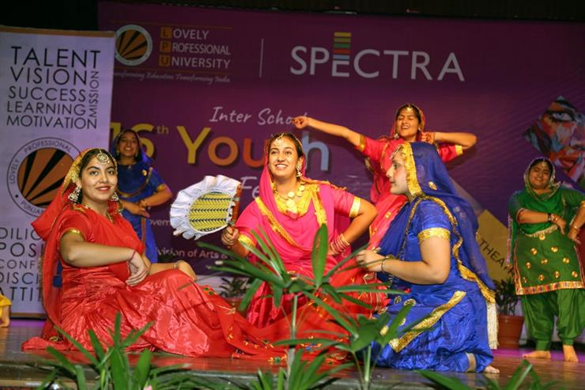

College Events
Annual Sports Day

Date: April 15, 2024
Description: Join us for a day filled with sports activities and competitions!
ABOUT US:
Welcome to Annual Sports Day, where creativity,
culture, and community come together in a
vibrant celebration!Our event features a wide
range of activities and games,from classic track
and field events like sprinting and relay races to
team sports like soccer, basketball, and volleyball.
We've also got fun and challenging obstacle courses,
tug-of-war competitions, and even some quirky relay
races to keep things exciting.
But Sports Day is about more than just competition.
It's a day to celebrate camaraderie, sportsmanship,
and the joy of being active. So come join us, bring
your friends and family, and let's make some memorie
together on the field!See you soon!
Cultural Fest

Date: May 20-22, 2024
Description: Experience the vibrant cultural diversity of our college through music, dance, and art!
ABOUT US:
Welcome to CULTURAL FEST, an electrifying celebration
of culture, creativity, and community!
Our festival is a vibrant tapestry of
diverse traditions, art forms, and experiences,
brought together to inspire, entertain, and unite
people from all walks of life.
At CULTURAL FEST, we believe in the power of culture
to transcend boundaries and foster understanding.
Through captivating performances, immersive exhibitions
and engaging workshops, we aim to showcase the rich
tapestry of global cultures while celebrating the unique
heritage of our own community.
Technical Symposium

Date: March 22-23, 2024
DESCRIPTION: Engage in discussions and workshops on the latest trends in technology!
ABOUT US:
Welcome to BINARY BLITZ,an annual gathering of tech enthusiasts,
innovators, and experts dedicated to fostering knowledge
exchange and collaboration in the rapidly evolving field of HACKATHON.
Our mission at BINARY BLITZ is to inspire innovation,
foster collaboration, and drive positive change in HACKATHON.
We believe in the power of collective intelligence and aim to
create a dynamic environment where ideas flourish and
breakthroughs happen.